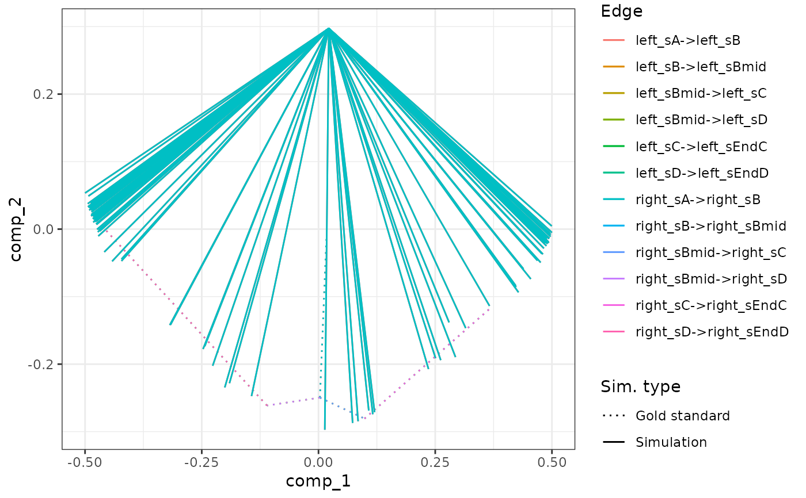

Assume the given models have the exact same feature ids and ran up until the generate_cells() step.
In addition, the user is expected to run generate_experiment() on the combined models.
combine_models(models, duplicate_gold_standard = TRUE)
Arguments
| models | A named list of models. The names of the list will be used to prefix the different cellular states in the combined model. |
|---|---|
| duplicate_gold_standard | Whether or not the gold standards of the models are different and should be duplicated and prefixed. |
Examples
# \donttest{ # create the config object init_config <- initialise_model( backbone = backbone_linear(), num_cells = 500, num_targets = 100, num_hks = 50, gold_standard_params = gold_standard_default(census_interval = 5, tau = 0.05), simulation_params = simulation_default( census_interval = 5, ssa_algorithm = ssa_etl(tau = 0.05), experiment_params = simulation_type_wild_type(num_simulations = 10) ) ) # generate the genes and their kinetics model_common <- init_config %>% generate_tf_network() %>% generate_feature_network()#> Generating TF network #> Sampling feature network from real network# run the simulation once model_a <- model_common %>% generate_kinetics() %>% generate_gold_standard() %>% generate_cells()#> Generating kinetics for 169 features #> Generating formulae #> Generating gold standard mod changes #> Precompiling reactions for gold standard #> Running gold simulations #> | | 0 % elapsed=00s |============= | 25% elapsed=00s, remaining~00s |========================= | 50% elapsed=00s, remaining~00s |====================================== | 75% elapsed=00s, remaining~00s |==================================================| 100% elapsed=00s, remaining~00s #> Precompiling reactions for simulations #> Running 10 simulations #> Mapping simulations to gold standard #> Performing dimred# run the simulation once more model_b <- model_common %>% generate_kinetics() %>% generate_gold_standard() %>% generate_cells()#> Generating kinetics for 169 features #> Generating formulae #> Generating gold standard mod changes #> Precompiling reactions for gold standard #> Running gold simulations #> | | 0 % elapsed=00s |============= | 25% elapsed=00s, remaining~00s |========================= | 50% elapsed=00s, remaining~00s |====================================== | 75% elapsed=00s, remaining~00s |==================================================| 100% elapsed=00s, remaining~00s #> Precompiling reactions for simulations #> Running 10 simulations #> Mapping simulations to gold standard #> Performing dimred# combine models, do experiment afterwards model_ab <- combine_models(list("left" = model_a, "right" = model_b)) %>% generate_experiment()#> Merging model 1/2 left #> Merging model 2/2 right #> Recomputing dimred #> Simulating experiment# }